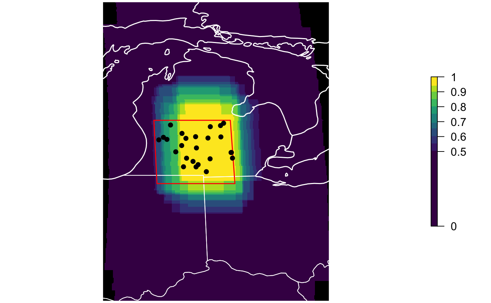

R/ebirdst-mapping.R
calc_effective_extent.RdThe selection of stixel centroids for analysis of PIs and/or PDs yields an effective footprint, or extent, showing the effective location of where the information going into the analysis with PIs and/or PDs is based. While a bounding box or polygon may be used to select a set of centroids, due to the models being fit within large rectangular areas, the information from a set of centroids often comes from the core of the selected area. This function calculates where the highest proportion of information is coming from, returns a raster and plots that raster, with the selected area and centroids for reference. The legend shows, for each pixel, what percentage of the selected stixels are contributing information, ranging from 0 to 1.
calc_effective_extent(path, ext, pi_pd = c("pi", "pd"), plot = TRUE)
| path | character; full path to directory containing the eBird Status and Trends products for a single species. |
|---|---|
| ext | ebirdst_extent object (optional); the spatiotemporal extent to filter the data to. |
| pi_pd | character; whether to use predictor importance ( |
| plot | logical; whether to plot the results or just return a raster without plotting. |
A raster showing the percentage of the selected stixels that are
contributing to each grid cell. In addition, if plot = TRUE this raster
will be plotted along with centroid locations and ebirdst_extent
boundaries.
#># define a spatioremporal extent bb_vec <- c(xmin = -86, xmax = -83, ymin = 41.5, ymax = 43.5) e <- ebirdst_extent(bb_vec, t = c("05-01", "05-31")) eff <- calc_effective_extent(path = sp_path, ext = e, pi_pd = "pi")